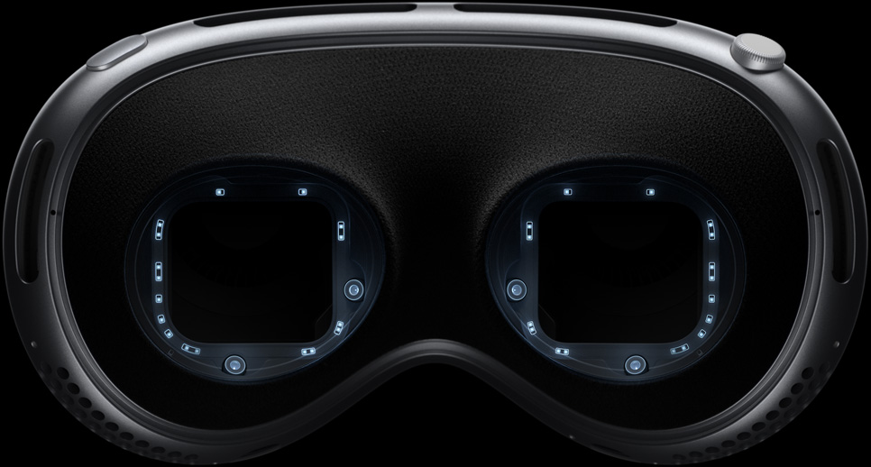
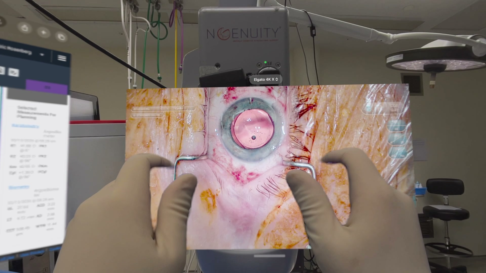
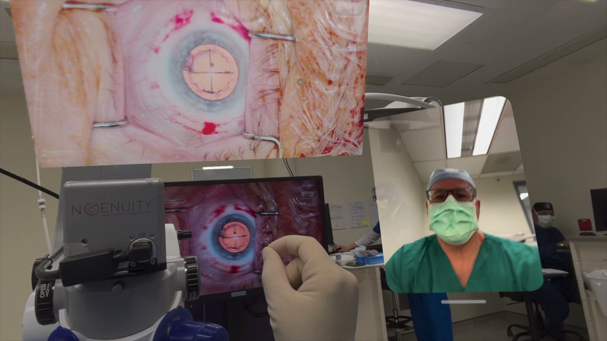
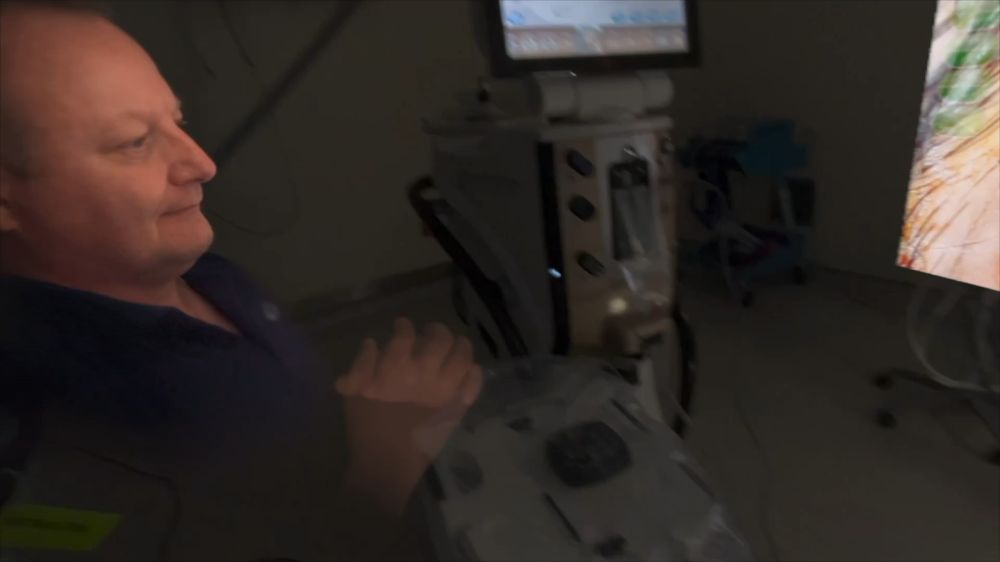
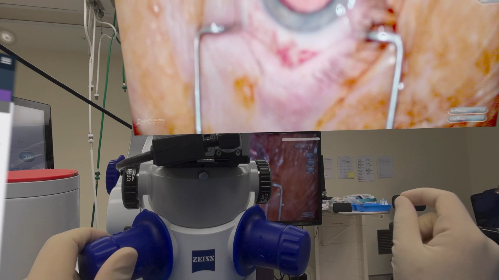

Clinical spatial collaboration
Expert presence for
the clinical moment.
A private clinical collaboration app for surgeons using digital microscopes, built for visionOS and other Apple platforms.
See the experienceHigh-fidelity context
See the work.
Stay in the workflow.
Spatial video places the clinical view where it is useful, while preserving the physical context, equipment, and interactions around it.

Private collaboration
Share the clinical view.
Keep the workflow controlled.
Surgeons can bring expert observers, mentors, and collaborators into a synchronized view of the digital microscope and surrounding clinical context.

Designed for Apple platforms
Presence that feels
natural and immediate.
Apple Vision Pro is the highest-fidelity node in a workflow designed to extend responsibly across Apple devices and the roles they serve.

Sterile workflow
Clinical context.
Hands stay free.
Spatial interaction keeps shared information available around the work, without asking the clinician to step away from the clinical environment.

Our mission
Elevate the standard of care to ensure optimal patient outcomes.
We are building toward that mission with clinical discipline, privacy by design, and evidence-led progress.
Discuss clinical access